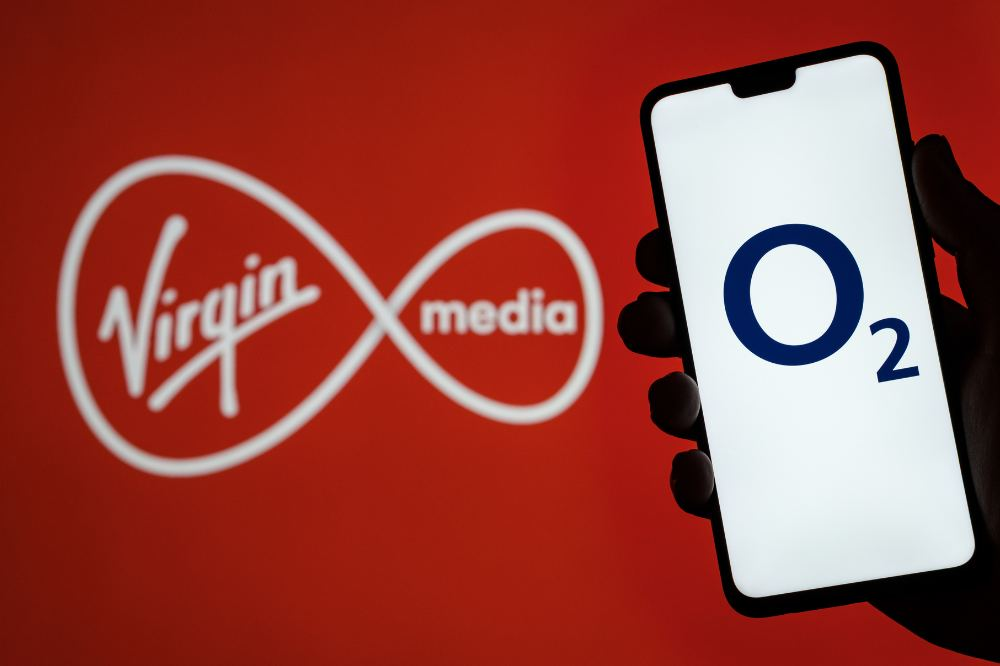

Tarife & Angebote Virgin Media O2 startet 2Gbps über Kabelnetz Virgin Media O2 hat begonnen, seinen 2Gbps-Breitbanddienst über das bestehende Kabelnetz auszurollen. Das Upgrade wurde bereits in 18 Standorten für rund drei Millionen Haushalte abgeschlossen, wobei die Ausweitung auf den Großteil des Kabelnetzes bis 2027 geplant ist. Virgin Media O2 · Europa · 28. Oktober 2026Tarife & Angebote · Europa
Virgin Media O2 startet 2Gbps über Kabelnetz
Virgin Media O2 hat begonnen, seinen 2Gbps-Breitbanddienst über das bestehende Kabelnetz auszurollen. Das Upgrade wurde bereits in 18 Standorten für rund drei Millionen Haushalte abgeschlossen, wobei die Ausweitung auf den Großteil des Kabelnetzes bis 2027 geplant ist.
Originalquelle öffnen ↗ Mobile Europe